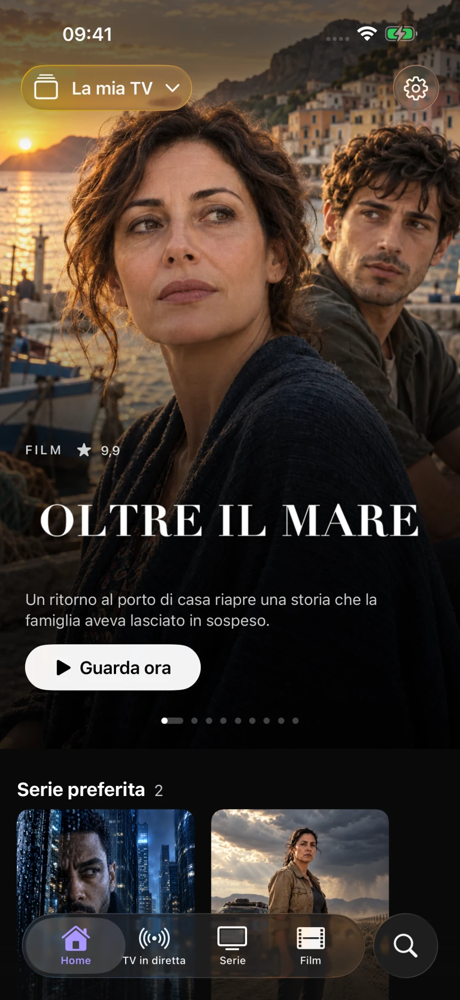
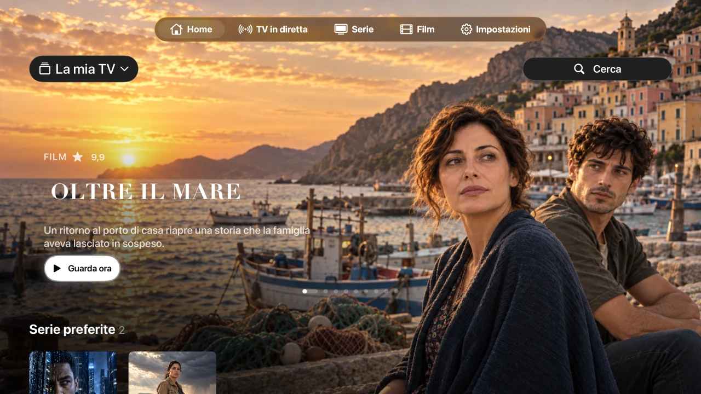
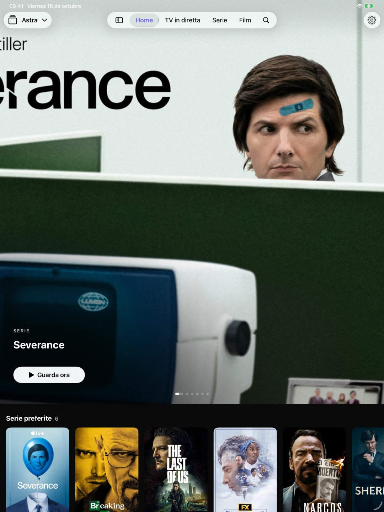

Playlist M3U e Xtream
Aggiungere un URL M3U/M3U8 o una connessione Xtream. Passa da un elenco all'altro e mantieni separato ogni catalogo, preferiti e cronologia. Puoi anche importare file M3U su iPhone e iPad.
Aggiungi una playlist M3U o una connessione Xtream per guardare canali, film e serie. Gratuito, senza pubblicità da parte di Astra.
Porta la tua playlist. Non ancora disponibile sull'App Store. Decidi tu se inviare l'email di notifica del lancio.

Aggiungere un URL M3U/M3U8 o una connessione Xtream. Passa da un elenco all'altro e mantieni separato ogni catalogo, preferiti e cronologia. Puoi anche importare file M3U su iPhone e iPad.
Sfoglia i canali, guarda cosa c'è in onda e controlla la guida ai programmi XMLTV. Tieni i tuoi canali preferiti vicini.
Esplora film e serie, scegli un episodio e riprendi da dove avevi interrotto. L'audio e i sottotitoli sono disponibili quando la fonte li fornisce.
Schede su iPhone, barra laterale su iPad e controlli integrati per il telecomando dell'Apple TV. Elenchi compatibili, preferiti e progressi possono essere sincronizzati tramite il tuo account iCloud privato.


AirPlay e Picture in Picture utilizzano il lettore nativo quando il sistema e il formato li supportano. I file importati localmente non vengono trasferiti come file riproducibili su Apple TV.
È in preparazione il lancio pubblico di iPhone, iPad e Apple TV. Astra non è ancora disponibile sull'App Store. È possibile richiedere una notifica di lancio tramite e-mail.
No. Astra non vende né fornisce canali, film, serie, playlist o abbonamenti TV. Porta una fonte che sei autorizzato a utilizzare.
La tua libreria rimane sul tuo dispositivo. I dati compatibili possono essere sincronizzati tramite il tuo database iCloud privato. Le statistiche sull'utilizzo e i rapporti sugli arresti anomali sono facoltativi, inizialmente disabilitati e controllati separatamente nelle Impostazioni.
Questo sito Web non ha analisi, pubblicità, moduli o cookie propri. GitHub Pages lo ospita e può registrare informazioni tecniche sulla visita nella sua informativa sulla privacy.
Sviluppato da Juan Cazalla Estrella.